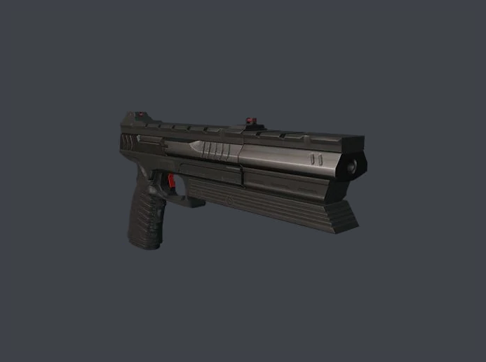

Sieger 300
Unlocked after reaching mastery level 15 in Colorado.
"A classic bullpup sniper rifle designed for precise, medium range engagements."
6/30
Sieger 300 Ghost
Unlocked by completing The Cheveyo Calibration escalation in A House Built on Sand.
"A unique "Ghost" variant of the Sieger 300. Designed for high precision, high damage engagements at all ranges, and in a modular fashion which allows for extensive customization."
6/18
Sieger 300 Tactical
Unlocked after reaching mastery level 10 in Isle of Sgàil.
"A tactical variant of the Sieger 300. Designed for precise, medium range engagements. Modded to have higher accuracy."
6/30
Sieger 300 Advanced
Unlocked after reaching mastery level 20 in Hokkaido.
"A modern ICA variant of the Sieger 300. Bullpup rifle designed for high precision damage at far ranges."
6/36
Sieger 300 Viper
Unlocked after reaching mastery level 15 in Mendoza.
"A "Viper" variant of the Sieger 300. A classic bullpup sniper rifle designed for precise, medium-range engagements."
6/30
Sieger 300 Arctic
Unlocked by completing The Proloff Parable escalation in Untouchable.
"An "Arctic" variant of the Sieger 300. Designed for high-precision , high damage engagements at all ranges."
6/12
Jaeger 7
Unlocked after reaching mastery level 5 in Paris.
"A modern marksman's rifle. Highly accurate and modular, allows for extensive customization."
6/18
Jaeger 7 Mk II
Unlocked after reaching mastery level 5 in Miami.
"A modern marksman's rifle. Highly accurate and modular, allowing extensive customization. This one has the signature Mk II look."
6/18
Jaeger 7 Lancer
Unlocked after reaching mastery level 20 in Sapienza.
"A "Lancer" variant of the Jaeger 7. A modern marksman's rifle. Highly accurate and modular, allowing extensive customization."
5/20
Jaeger 7 Covert
Unlocked by completing the Who's Sniping the Sniper? challenge in Apex Predator.
"A covert variant of the Jaeger 7. A modern marksman's rifle with custom detailing. Highly accurate and modular, allowing for extensive customization."
6/18
Jaeger 7 Tuatara
Unlocked after reaching mastery level 20 in Haven Island.
"A "Tuatara" variant of the Jaeger 7. A modern marksman's rifle. Highly accurate and modular, allowing for extensive customization."
5/20
Jaeger 7 "Tiger"
Unlocked after reaching mastery level 15 in Bangkok.
"A unique "Tiger" variant of the Jaeger 7. A modern marksman's rifle with custom detailing. Highly accurate and modular, allowing for extensive customization."
8/24
Jaeger 7 Green Eye
Unlocked by completing The Envy Contention escalation in The Farewell.
"A Jaeger 7 Mk II sniper rifle variant featuring a suppressor, a feline-inspired cosmetic mod, and a black and green fragment design. The perfect weapon for hunters who lie in wait and strike with confidence."
6/18
Druzhina 34
Unlocked after reaching mastery level 20 in Mumbai.
"A modern long-distance sniper rifle. Very effective on all ranges, but has a slow firing rate."
8/32
Druzhina 34 DTI
Unlocked after reaching mastery level 15 in Dubai.
"A DTI variant of the Druzhina 34. A modern long-distance sniper rifle. Very effective at all ranges, with a medium firing rate."
4/16
Druzhina 34 ICA Arctic
Unlocked after reaching mastery level 20 in Siberia.
"A unique ICA variant of the Druzhina 34. A modern long-distance sniper rifle. Very effective at all ranges, with a medium firing rate."
5/20
Hackl Leviathan Sniper Rifle Covert
Unlocked after reaching mastery level 20 in Chongqing.
"A covert variant of the Hackl Leviathan Sniper Rifle. The ICA's latest model of the Leviathan is a modern marksman's rifle. Silenced and deadly."
4/16
Hackl Sniper Rifle Covert "Ducky" Edition
Unlocked by completing the Featured Contracts - Track 2, Tier 7 challenge (complete 60 featured contracts on Hitman 3 locations).
"A covert variant of the Hackl Leviathan Sniper Rifle with a little added flair. Based on the ICA's latest model of the Leviathan, it's as silent to the ear as it is loud to the eye."
4/16
ICA Woodsman Rifle Covert
Unlocked by completing 17 Sniper Assassin challenges.
"A covert, ICA variant of the Bartoli Woodsman Hunting Rifle. From Bartoli, makers of the finest hunting gear available, comes the new Bartoli Woodsman Hunting Rifle. The stock is carved from solid walnut; the barrel drilled from the highest-quality metal blend. Comes with a suppressor."
4/16
Bartoli Woodsman Hunting Rifle
Unlocked after reaching mastery level 20 in Dartmoor.
"From Bartoli, makers of the finest hunting gear available, comes the new Bartoli Woodsman Hunting Rifle. The stock is carved from solid walnut; the barrel drilled from the highest-quality metal blend."
6/18
The Golden Dragon
Unlocked by completing The Lee Hong Derivation escalation in End of an Era.
"A custom-built Bartoli Woodsman Hunting Rifle with a delicately ornamented barrel; a stock built entirely from red-tinted cherry with a beautiful gold trim; and a Chinese-style golden dragon-headed muzzle brake."
4/16
The Majestic
Unlocked by completing The Pride Profusion escalation in End of an Era.
"A unique and magnificently designed sniper rifle. Be majestic like the Peacock and take your shot: You won't miss. But would that be too easy?"
4/16